주문 하나를 다섯 곳이 알아야 할 때
영상은 숫자 두 개로 시작해요. 첫 화면의 건물 열 채 가운데 여덟 채에 불이 켜져 있어요. 포춘지 선정 100대 기업 10곳 중 8곳이 카프카를 쓴다는 뜻이에요.
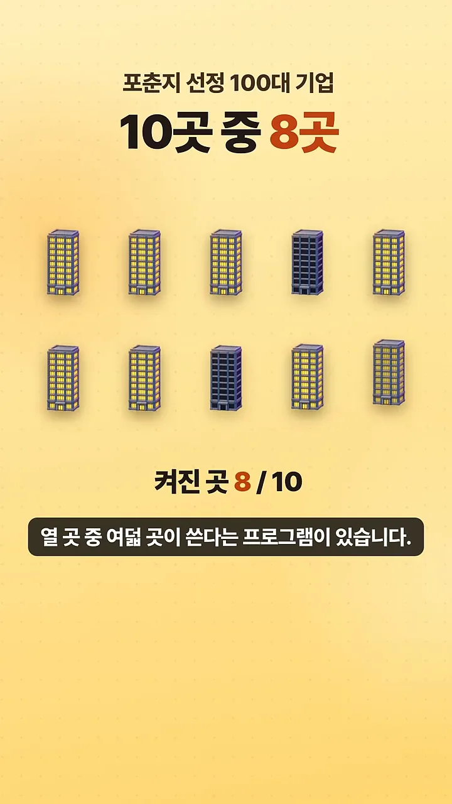
두 번째는 메시지 처리 도구 점유율 막대예요. 카프카 39.3%, RabbitMQ 29.8%, ActiveMQ 6.0%, IBM(International Business Machines) MQ(Message Queue) 5.9% 순이에요. 막대 아래 작은 메모를 보면 이건 6sense가 '쓰는 회사 수'로 추정한 값이에요. 같은 메모에 개발자 설문(Stack Overflow 2024)에선 RabbitMQ 10.9%, Kafka 9.4%로 순서가 뒤집힌다고 적혀 있어요. 어떤 기준으로 세느냐에 따라 1위가 달라진다는 점은 기억해 두면 좋아요.
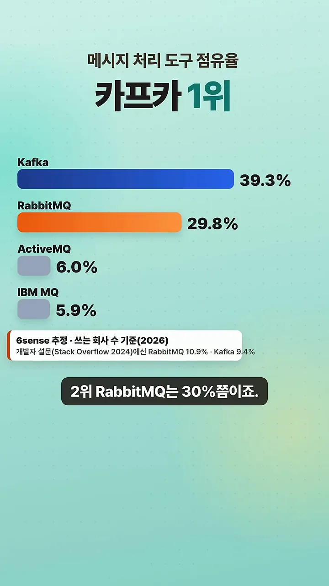
주문 하나를 다섯 곳이 알아야 해요
이런 도구가 왜 필요한지는 쇼핑몰 주문으로 설명해요. 가운데 휴대폰에서 주문 버튼을 누르면 결제, 재고, 배송, 알림, 추천 다섯 가게가 모두 그 사실을 알아야 해요. 화면처럼 서로 빨간 선으로 하나하나 직접 이어 두면, 배송 가게 하나가 회색으로 멈췄을 뿐인데 주문 전체가 '처리 중…'에 걸려요.
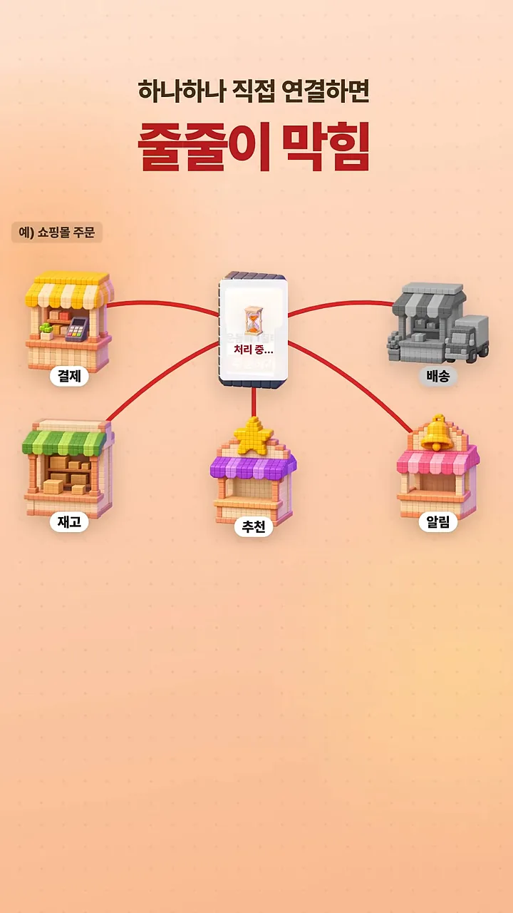
보통 메시지 큐는 우체통처럼 동작해요. 누가 편지를 꺼내 가면 우체통에서 사라지죠. 영상의 핵심 비유는 여기서 나와요. 아래 화면에서 빨간 우체통은 #1042 주문 위에 잠깐 서 있을 뿐이고, 바닥에는 #1041, #1042, #1043 주문이 한 줄로 적힌 긴 종이가 깔려 있어요.
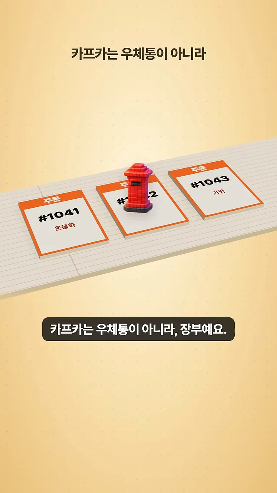
읽어도 지우지 않는데 왜 안 느려질까요?
주문이 들어오면 카프카는 장부 끝에 한 줄씩 적고, 누가 읽어도 지우지 않아요. 대신 읽는 쪽이 저마다 책갈피를 끼워 둬요. 화면에서 파란 깃발은 '배송 · 1', 노란 깃발은 '결제 · 3'이에요. 배송팀은 1번까지, 결제팀은 3번까지 읽었다는 뜻이에요. 이 책갈피 번호가 오프셋이에요.
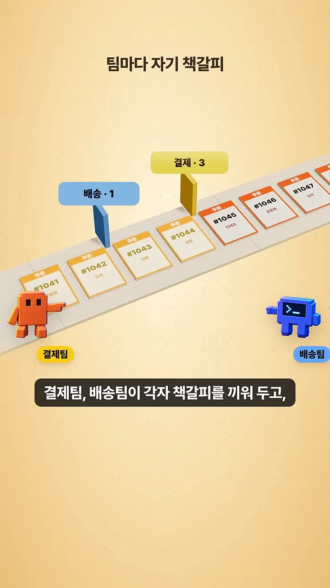
지우지 않으니 되돌아갈 수도 있어요. 책갈피를 뒤로 돌리면 같은 기록을 다시 읽어요. 새로 생긴 서비스에 처음부터 읽게 하면 지난 주문까지 볼 수 있죠. 화면 왼쪽 아래 '새 서비스' 옆 말풍선이 조건을 달아 둬요. '보관 기간 안에서만', 그리고 그 기간은 회사가 정해요.
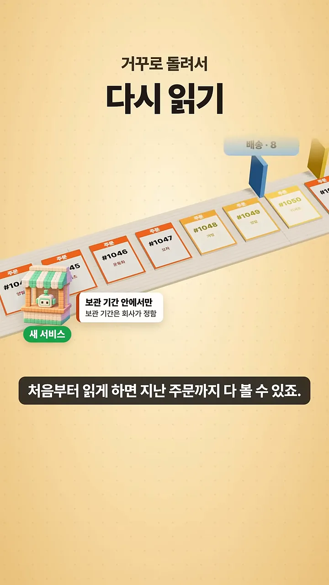
쌓아 두는데 왜 안 느려질까요
기존 메시지 큐는 대부분 서랍장처럼 관리했어요. 메시지마다 누가 가져갔는지 표시하고, 알맞은 칸을 찾아 넣었다 뺐다 해야 하죠. 그러니 쌓일수록 느려지기 쉬워서 읽은 건 바로 지웠어요.
카프카는 공책처럼 써요. 새 기록은 늘 맨 끝에 이어 쓰는 순차 쓰기만 하고, 읽을 땐 책갈피 번호로 바로 펼쳐요. 아래 화면의 빨간 글씨 '아무 데나 0.1MB/s'와 파란 글씨 '차례대로 600MB/s'가 그 차이예요. 그래서 '6,000배+'라는 숫자가 나와요. 흰 메모를 보면 카프카 설계 문서에 실린 예시로, 7200rpm 디스크 6개를 RAID-5로 묶은 옛 하드디스크에서 잰 값이에요.
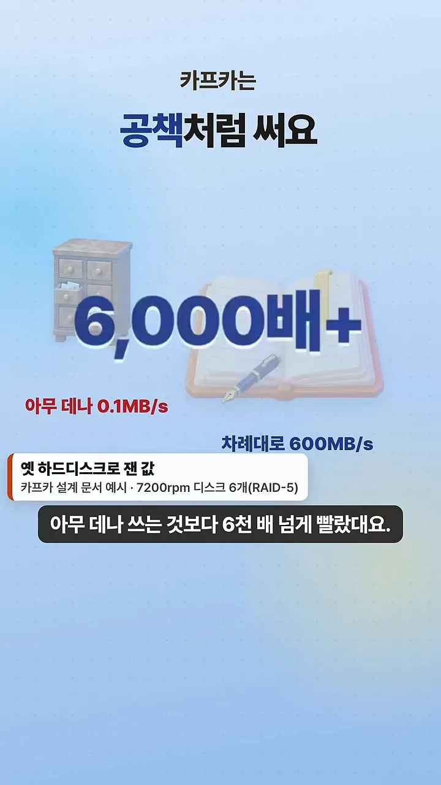
장부가 길어지면 여러 권으로 나눠 여러 서버가 같이 기록해요. 이렇게 나눈 한 권이 파티션이에요. 화면 왼쪽에 서버 세 대가 있고, 장부 세 줄이 나란히 이어져요. 아래 '하루 7조 개'는 링크드인이 이 방식으로 처리한 양이고, 작은 글씨에 출처(링크드인 엔지니어링 블로그, 2019)와 브로커 4,000대 이상이라는 규모가 적혀 있어요.
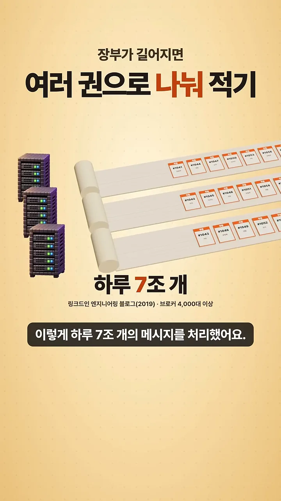
사실상 표준이 됐어요
이 방식은 사실상 표준이 됐어요. 다른 회사 제품들도 각자 공식 문서에 'Kafka API·프로토콜 호환'을 내걸어요. 아래 화면은 그 흐름의 마지막 장면이에요. 왼쪽 IBM에서 오른쪽 컨플루언트로 화살표가 가고, 컨플루언트 밑에는 '카프카를 만든 제이 크렙스가 공동 창업'이라고 적혀 있어요. 금액은 약 110억 달러, 근거로 IBM 분기 보고서(10-Q)와 2026년 3월 17일 인수 완료가 함께 나와요.
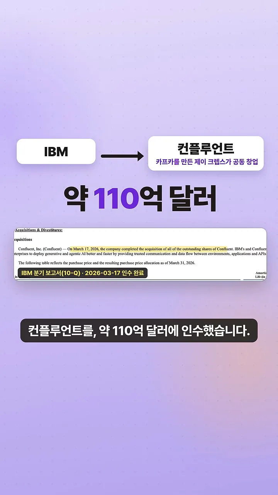
언제 쓰고, 회사엔 뭐가 좋을까요?
어떻게 고를지는 갈림길 표지판 하나로 정리해요. 왼쪽 화살표 '한 번 처리하면 끝' 쪽에는 RabbitMQ·SQS 같은 큐가, 오른쪽 '여러 팀이 다시 읽기' 쪽에는 카프카가 서 있어요. 그 아래 회색 글씨 Amazon MSK(Managed Streaming for Apache Kafka)와 Confluent Cloud는 카프카를 직접 설치하지 않고 빌려 쓰는 클라우드 관리형 서비스예요. 영상은 처음엔 이쪽으로 시작하는 게 편하다고 권해요.
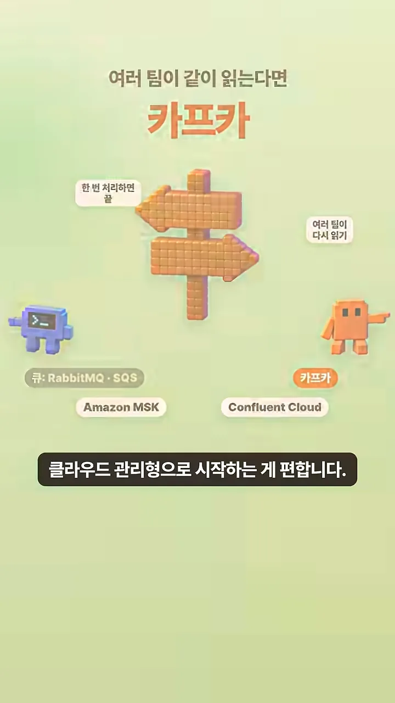
| 상황 | 고를 것 | 예 |
|---|---|---|
| 작업을 한 번씩 처리하면 끝나요 | 가벼운 메시지 큐 | RabbitMQ, SQS |
| 여러 팀이 같은 기록을 읽거나 다시 읽어야 해요 | 카프카 (관리형부터) | Amazon MSK, Confluent Cloud |
회사가 얻는 것 세 가지
첫째, 새 기능을 붙이기 쉬워요. 예로 '주문하면 바로 할인 쿠폰 보내기'를 만든다고 해요. 화면을 보면 결제 가게 위에 '결제는 그대로'라는 말풍선이 있고, 장부의 #1046 자리에 초록 '쿠폰' 책갈피 하나가 새로 꽂혀 있어요. 결제 시스템은 손대지 않고 쿠폰 담당이 같은 장부를 읽기만 하면 끝이에요.
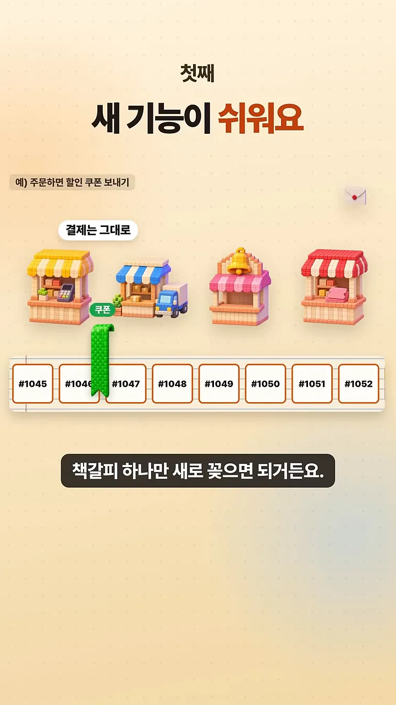
둘째, 중간에 멈춰도 놓치지 않아요. 다음 화면에서 쿠폰 가게가 회색으로 변하고 빨간 '쿠폰 서비스 멈춤' 표시가 떠요. 그래도 장부는 #1054까지 계속 쌓이고, 쿠폰 책갈피는 멈춘 자리(#1052 근처)에 그대로 꽂혀 있어요. 다시 켜면 그 자리부터 이어서 처리하면 돼요. 영상은 여기서도 '정해 둔 보관 기간 동안'이라는 조건을 달아요.
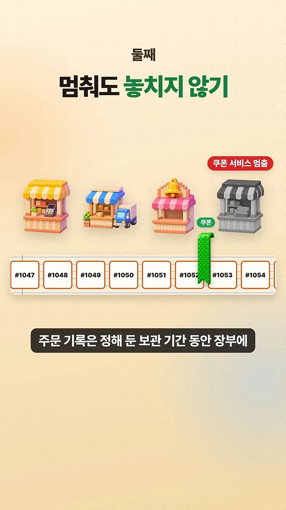
셋째, 지금 일어나는 일을 바로 볼 수 있어요. 화면 왼쪽 위 '예) 실시간 매출 화면 · 재고 알림'처럼, 주문이 생기는 순간 장부에 쌓이니 그걸 바로 읽어 모니터에 매출을 띄우거나 알림을 보낼 수 있어요.
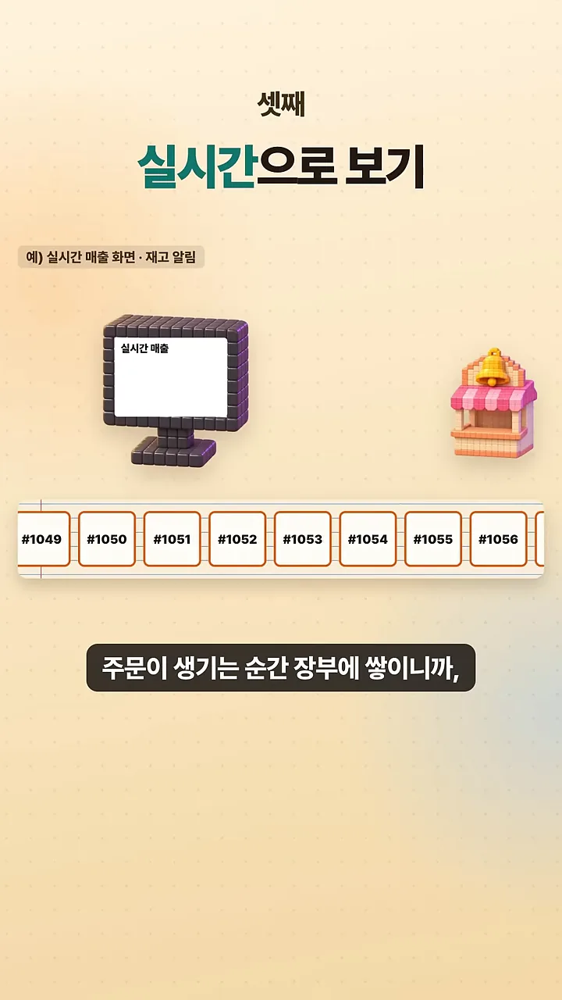
기획할 때 던질 질문 하나
마지막으로 영상은 개발자가 아닌 사람에게 질문 하나를 권해요. 화면의 '기획' 캐릭터가 장부를 가리키며 묻는 말이에요. 데이터가 이미 카프카에 있다면 다른 시스템을 건드리지 않고 바로 가져다 쓸 수 있으니까요.
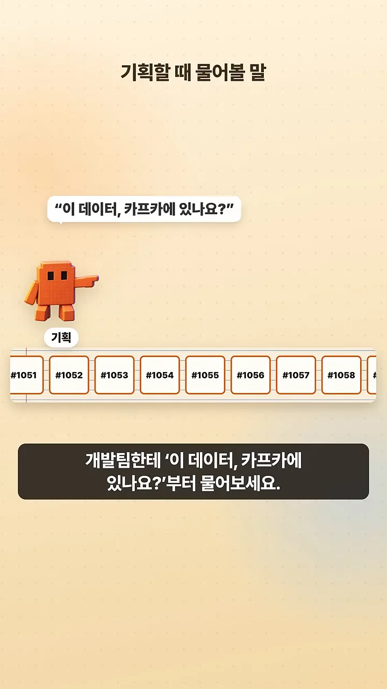
카프카가 특별한 건 많은 기록을 쌓아두고도 빠르게 읽도록 설계된 장부라서 여러 팀이 같은 기록을 나눠쓰고 다시 읽을 수 있다는 점이에요.
— 영상 02:12